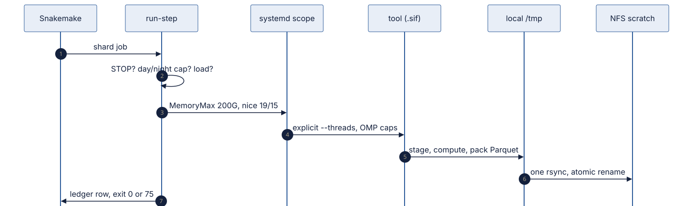

Group meeting · 2026-10-28 · plan only, nothing executed
all-the-data / bio-box
Gene-neighbourhood, domain and ncRNA context across public prokaryote, phage and plasmid assemblies, built in gated stages from 14 genomes upward.
Current host: wilkcomp02 (CPU only). Target: rented bare metal (Hetzner). Source docs: STAGES.md, PLAN.md v3, 00-spec.md v3, DEPLOYMENT v3, planning/*, audits/critique_4–8, SYNTHESIS_2.
Bottom line: approve a 2–3 week preflight, then S0 on 14 genomes. No large compute until S0 has measured real rates.
What we ask today
Sign off the first-10 questions (the lab's, not the engine's)
Send a written footprint request to the pod owner: threads, scratch growth to ~2 TB, multi-week runs, wilkcomp03 GPU, a second account
Name a data engineer and a bioinformatician (may be one person, ~60%)
Accept kill criteria K1–K6
Budget a one-week Hetzner rehearsal after S2 (quote pending)
What we are not asking for
No planetary build, no Logan, no GPU training
No public service: localhost + SSH tunnel only
No custom indexes until a measured SLO fails
Exit of S0: pipeline reproduces curated annotations on 14 reference genomes; every unit rate measured on Haswell; the size model is refit from data instead of guesses.
Existing tools each cover one slice. The new part is narrow: sub-ORF tapes with ncRNA, mobility-aware statistics, and raw sequence lineage in one queryable store.
Slice
Already covered by
Plan
Neighbourhood viewing for one query
webFlaGs, GCsnap2, EFI-GNT, IMG/VR
Baseline for Q1/Q5; reuse, don't rebuild
Genomic-context language models
gLM2 + OMG corpus + Gaia (Tatta Bio), Evo 2, Bacformer
gLM deferred; gLM2 is the baseline
Dark families with context
FESNov (2024), Pavlopoulos 2023, Durairaj 2023
Cite; compare family sets
Structure for dark proteins
Foldseek, AFDB / ESMAtlas30, ProstT5
Transfer at ≥90% ID only; ProstT5 on GPU later
Pangenome co-occurrence
Coinfinder, STRING neighbourhood channel
External baselines in B-EXT
Planetary sequence search
Logan-Search, MetaGraph
Logan last, compute-to-data on AWS
MGE / defense calls
geNomad, CheckV, DefenseFinder, PADLOC
Run as tools; system calls stored as sidecars
PRIOR-ART.md v3
Five independent audits rewrote the v2 plan: its scale numbers, dedup, statistics and benchmarks did not survive arithmetic.
v2 claim
Finding
40.8 TB Logan, 68 h
Hundreds of TB; 40.8 TB at 400 MB/s is 28 h anyway
2.5×10⁹ contigs, 3.6×10⁹ slots
1.44 slots/contig, impossible under the ≥2-feature gate
POPCNT ≤ 6 = 95% ANI
≈99.3% ANI; 95% is E[popcnt] ≈ 22
Syncmer hash "90% invariant"
Jaccard ≈ 0.21 at 90% AA ID
LLR_func primary metric
Not a likelihood ratio (P_obs undefined)
Recall 48/50 known systems
Circular: DefenseFinder/PADLOC models are inputs
"0% / 100%" criteria
0/200 still allows ≈1.5% (95% UB)
4.7-day build
Withdrawn; replaced by a measured capacity model
Bioinformatics 20 findings
Data science 17 findings
Architecture 16 findings + roadmap
Database 20 findings
Data quality 19 findings + golden set
Synthesis 28 decisions, D-01..D-28
Each auditor first rewrote its own brief: what a top professional would add, rawest material, methods, outside proof.
audits/critique_4..8, audits/SYNTHESIS_2.md
Six rules make the build accretable instead of a one-shot planetary run.
1 · Stage = one release
One data increment, one capability, one science question, one gate, release rS<k>.<n>.
2 · Shards, not genomes
500–2,000 genomes per job; idempotent, content-addressed, pausable by STOP file.
3 · Layers have update rules
Append-only L0/L1/L3 coords; L2 incremental with crosswalk; L4 recomputed; L5 only if needed.
4 · Nothing discarded
Every contig incl. dedup members stays retrievable. Dedup changes counting weights only.
5 · Accretion is proven
Incremental build of stage k must hash-equal a from-scratch build of 0..k.
6 · Measure, then predict
Each stage writes unit rates to sizing.yaml; a stage missing its estimate by >2× stops for review.
Every number in the docs is labelled measured (stage, date), derived (formula) or estimate ±40%.
Part 1
Data layers
What is stored, how it changes, and how any slot traces back to raw sequence.
Seven layers, each reading only from below. A bug in statistics never forces re-running annotation.

append-onlyincremental + crosswalkrecomputed per releaseoptional
Layer
Recompute trigger
Truth key
L0 / L0-seq
never; new source release = new snapshot
sha256 per object; BLAKE3-128 per sequence
L1 annotation
tool or reference-DB bump → new annot_version
(genome_uid, annot_version)
L2 clusters
>20% new sequences, parameter change, or drift test fails
cluster_uid + id_history
L4 statistics
any change below; deltas flagged stale
stats_release_id
planning/data_layer_and_tests.md §1
Raw sequences stay available to every project: each slot resolves to bases and to the source record it came from.

Stored
Every source contig byte-exact (64 KB Parquet chunks), incl. dedup members and screening rejects. Proteins incl. Sec/Pyl/frameshift reconstructions. IGRs as coordinates.
*FCS-GX needs ~470 GB in RAM (verify) against a 200 GB cgroup: route decided in preflight (skip for NCBI-screened sources, rented box, or exception).
On wilkcomp02 every job goes through one wrapper that enforces the house rules, so the watchdog never fires.

Threads 40 day / 56 night, physical cores only
Memory systemd-run MemoryMax=200G
Priority nice 19 monolithic, 15 fan-out; watchdog renices a PID past ~369 CPU-min
Disk stage on local /tmp, one rsync back; no NFS dir >1,000 files
Pause STOP file → exit 75, resumable
Network serve on 127.0.0.1 via SSH tunnel
Ledger in / kept / rejected, peak RSS, CPU-s, versions per job
Lesson defense-finder -w 1 drove load to 67: thread env vars always set
Ported from homology_pod.sh and the fragment-defense pod scripts.
DuckDB is the query engine, used read-only. One writer builds a manifest; readers open a generated catalog from local disk.

Why not a shared read-write catalog
DuckDB allows one read-write process or many read-only ones, and warns about database files on network storage. v2 had serve, append and sidecar registration all writing.
DuckDB tests K-01..K-13 (every stage, every new host)
Version pin · memory_limit spills inside the cgroup · temp_directory local · thread cap · partition and row-group pruning (EXPLAIN ANALYZE) · LIST cost · 1–16 read-only clients · second writer fails fast · NFS vs local · sort determinism · sequence-store format bake-off.
DuckLake v1.0 evaluated at S2 against four pass criteria; adopted only if it beats the generated catalog.
Part 4
Tests and gates
A stage is done when outside truth agrees, not when the job exits 0.
Seven gates apply to every stage; failing any one stops the next stage.
shuffled input order, other thread counts, kill-resume: identical hashes
D-01..05
3
Accretion equivalence
incremental = from scratch (L0/L1/L3 hash; L2 via crosswalk, ARI ≥ 0.99)
A-01..07
4
Oracle agreement
every query class equals a brute-force scan, incl. window-edge pairs
Q1–Q8
5
Golden regression
codes, starts, introns, frameshifts, operons, riboswitches vs curated truth
G-01..05, B-G
6
Sequence round trip
digest = source checksum; 10k random slices = samtools faidx
R-01..09
7
SLOs
p50/p95, warm and cold, 8 clients, hub/mid/tail tokens
§1.2 table
Plus schema contracts C-01..C-09 on every table: keys unique, foreign keys resolve, list lengths equal, coordinates in bounds, enums mapped to Sequence Ontology.
Accretion is proven, not assumed: the incremental path and the rebuild path must agree before a release is cut.

Additive counts merge across epochs.
Medians, entropies, Z and q-values never "add"; they are flagged stale until recompute.
Token remap is merge-only; splits go through a new release.
Latency targets are per query class and measured on the host, replacing v2's 4 ms claims.
Class
Example
Served by
Warm p50 / p95
Cold p95
Q1 count
loci with A and B within ±k ORFs
slot_pairs
0.5 / 2 s
10 s
Q2 neighbourhoods
fetch 1,000 contig tapes
contig_tapes
0.3 / 1 s
5 s
Q3 anchor profile
partners of A by Z
pair_stats
0.1 / 0.5 s
3 s
Q4 drill-down
loci of (A, B) with geometry
slot_pairs
0.5 / 2 s
10 s
Q5 pathway hole
core(A)&core(B)&~pan(C)&masks
pangenome planes
0.2 / 1 s
5 s
Q6 co-transmission
top-k X for C
transition edges
1 / 5 s
20 s
Q7 sequence slice
(uid, start, end, strand)
sequence store
0.05 / 0.2 s
1 s
Q8 ad-hoc SQL
analytics
DuckDB read-only
no SLO; memory-capped, cancellable
A miss is fixed by an L5 index (Roaring slot-level bitmaps, offset index) or a revised target with a written reason. Hub anchors are 6–12 GB, not 5–80 MB.
Part 5
Stage cards
Smallest data first. Each stage adds one capability and answers one question.
Eight stages after preflight; wilkcomp02 carries S0–S5, rented hardware takes over global work from S6.

Stage
Adds
n
Gbp
Core-h (est.)
Seq store
Host
S0
golden set + CAMI subset
~14
0.05
100–1.5k
0.03 GB
pod
S1
INPHARED phages
30–40k
~2
250–2.5k
0.9 GB
pod
S2
PLSDB plasmids
72,360
5–7
0.8–6k
2.8 GB
pod
S3
GTDB reps <2 Mbp
9–12k
10–13
1–10k
5.2 GB
pod
S4
IMG/VR HQ vOTUs
0.23M
~12
4.5–17k
5.5–19 GB
podlocal-only
S5
all GTDB species reps
143,614
400–450
20–80k
207 GB
borderline
S6
all GTDB genomes
732,475
2.7–3.1k
60k–1.6M
+1.34 TB
split
S7+
AllTheBacteria, SPIRE, Logan
millions
Tbp–Pbp
—
—
Hetzner / AWS
Estimates: planning/sources_and_sizing.md; pod ≈ 800 core-h/day; all rates unmeasured until S0
Stage card · S−1 · 2–3 weeks · no data, no compute
Preflight closes the gaps that would stall S0–S3: questions, approvals, IDs, reference DBs, repo and CI.
Governance
First-10 questions signed off, each with a baseline tool
Roles, time boxes, kill criteria K1–K6
Footprint request to pod owner; reply filed
Decisions (ADRs)
BLAKE3-128 UIDs, dense IDs per release
FCS-GX route; human-data rule
Upgrade policy: bumps only at stage boundaries
L0 kept durable; code license and name check
Infrastructure
Git repo, CI with a 3-genome micro-S0 fixture
Image by digest; .sif on the pod; bio-box doctor
run-step ported, kill-resume incl. wiped /tmp
Data
golden.yaml pinned (SR1, Lak, Obelisk)
refdb.yaml: version, sha256, size, RAM, license
sources.yaml for S0–S3; costs.md quotes
planning/preflight_gaps.md §7
Stage card · S0 · ~4 weeks
S0 runs the full stack on 14 reference genomes and freezes the decisions that are expensive to change later.
Adds
MG1655, B. subtilis 168, T4, λ, M. genitalium, SR1, Lak phage, M. acetivorans, H. volcanii, S. acidocaldarius, H37Rv, B. theta, SF370, an Obelisk; CAMI II subset; spike-in panel.
Capability
Every layer at toy scale; read-only catalog; run-step, ledger, doctor. ADRs: schema v1, badge layout, enums → SO terms, sequence-store format (K-13).
Science check
Gene starts vs EcoCyc/SubtiWiki; operons vs RegulonDB; T4 introns stitched; λ gpG-T merged; code 4 and 25 detected; leaderless starts in Haloferax; production Infernal recall ≥0.98 of full Rfam.
Gate
All seven gates at full oracle scale; K-01..K-13. Measures R_pyro, r_pfam, s_cm, geNomad rate, MMseqs2 RSS/tmp, bytes/bp. If S5 >150 days predicted: re-plan before S1.
n ~14 + subsetGbp 0.05core-h 100–1,500disk <20 GBrelease rS0.1
Stage card · S1 · ~2 weeks
S1 adds ~35k complete phages: first real pair tables, first clusters, first accretion-equivalence test.
Adds
INPHARED complete phage genomes (count read from *_data.tsv at freeze). Open sequences; INPHARED scripts AGPL, called as a tool, not vendored.
Capability
pyrodigal-gv codes 11/15; PHROGs; intron/HEG and frameshift stitching at scale; viral regime; first slot_pairs and pair_stats; clusterupdate exercised.
Science check
Lysis cassettes, Acr–Aca loci and the tail-chaperone frameshift rank as top modules with defense annotations held out. Lab Q1 (retron RT neighbourhoods with FASTA) answered.
Gate
Everything in S0 plus A-01..A-07: S0→S1 incremental equals S0+S1 from scratch. First scaling-fit point. Cross-check against fragment-defense phage DefenseFinder/PADLOC runs.
n 30–40kGbp 1.7–2.2core-h 250–2,500seq store 0.9 GBrelease rS1.1
Stage card · S2 · 2–3 weeks · then P1 rehearsal
S2 adds 72k plasmids and is the first real test of passenger versus coupling.
Adds
PLSDB 2024_05_31_v2 (72,360). Redistribution terms not stated: check before any pack.
Capability
Backbone vs cargo; CONJScan and IntegronFinder sidecars; vehicle clustering on real MGEs; replicon-matched geometry test. Decisions: DuckLake, LIST vs exploded tapes, offset index.
Science check
parAB, ccdAB, hok/sok rank; blaTEM–tnpA does not. First pre-registered, hash-committed slice of the B5 trap panel; FPR with exact-binomial CI. Lab Q4 answered.
Gate
Everything in S1; data-layer decisions recorded as ADRs; 2-point scaling fit. K4 kill review if trap FPR upper bound >10%.
n 72,360Gbp 5–7core-h 800–6,000seq store 2.8 GBrelease rS2.1
Stage card · S3 · ~3 weeks
S3 adds ~10k small genomes, where genetic codes, reduced pathways and taxonomy get hard.
Adds
GTDB R226 species reps under 2 Mbp: Patescibacteria, DPANN, Mycoplasmatota, endosymbionts, selected by genome_size.
Capability
Codetta at scale; taxonomy with confidence feeding tax_order_id; first tree-ordered presence bitmaps and transition edges on the R226 tree; smORF promotion.
Science check
Buchnera-type pathway losses called as losses, not holes; code reassignments in BD1-5/SR1 detected. Lab Q3 and Q10 answered.
Gate
Everything in S2 on a stratified sample. The 3-point scaling fit decides whether S5's global steps run on the pod or on Hetzner.
n 9–12kGbp 10–13core-h 1k–10kseq store 5.2 GBrelease rS3.1
Stage card · S4 · ~3 weeks · local-only
S4 adds uncultivated viruses; their sequences never leave the lab because of JGI policy.
Host predictions with confidence; provirus boundaries; spacer–protospacer links; L2 drift test (incremental vs full recluster ARI).
Science check
Anti-defense hotspots and counter-defense modules rank above prophage moron–structural passengers (prophage slice of the trap panel, with CI).
Gate
Everything in S3, plus drift test and license-flag test: no non-redistributable UID in any exportable pack.
n 0.23M (+0.7M)Gbp ~12 (+10–30)core-h 4.5k–17kseq store 5.5–19 GBrelease rS4.1
Stage card · S5 · 6–14 weeks · borderline on the pod
S5 adds all 143,614 GTDB species reps: the first tree-wide answers and the first honest benchmark.
Adds
GTDB R226 species representatives (127 GB tarball, 400–450 Gbp).
Capability
Full token dictionary; tree-wide dispersion; core plane over species reps; L5 decision per query class. Becomes the lite edition.
Science check
B1 temporal holdout: dictionary frozen at a 2013 snapshot, scored on systems published later, Wilson CI. STRING and Coinfinder baselines. First hash-timestamped prospective prediction file.
Envelope
MMseqs2 ≈160 GB vs 200 GB cap; /tmp peak 0.5–0.9 TB vs 940 GB; 25–100 days. Mitigate: exact dedup first, per-phylum linclust + clusterupdate, short HMMER shards; else move L2 to Hetzner.
n 143,614Gbp 400–450core-h 20k–80kseq store 207 GBrelease rS5.1 = lite
Stage card · S6 · split across hosts
S6 adds all 732k GTDB genomes for pangenome planes; per-genome work stays on the pod, global work moves to rented metal.
Adds
588,861 non-representative members; RefSeq Complete Genome flag from assembly_summary_refseq.txt.
Capability
Three-valued pangenome planes with shrinkage; closed-or-multi-strain mask; strain-level vehicle dedup. Becomes the core edition.
Science check
Missing-step search with quality masks recovers ThyA/ThyX, MetE/MetH, FolB/PTPS-III with CIs. B3 fragmentation test under its pre-registered false-hole bound.
Split
Pod: per-genome L1, sequence store, per-species planes. Hetzner (P2): global L2 clustering, geNomad on new members. Results return as L2 Parquet with crosswalk; cross-host hash equality (D-05).
n 732,475Gbp 2.7–3.1kcore-h 60k–1.6Mseq store +1.34 TBrelease rS6.1 = core
Stage card · S7+ · off the pod by design
S7 adds metagenomic and SRA-derived contigs in order of cost, and stops when novelty per Tbp falls below a preset threshold.
1 · AllTheBacteria
2.44M isolate assemblies, MIT. Identity resolution against S0–S6 first: most overlap GTDB.
2 · SPIRE, GlobDB extras
Unbinned and MAG contigs; CheckM2, GUNC, FCS-GX on every MAG/SAG.
3 · Logan, last
AWS us-east-1, compute-to-data. Runs preselected by SRA metadata and STAT. Only L1 Parquet and kept sequences leave AWS.
Gate at every substage: identity resolution, screening, and a rarefaction check: novel NR50 clusters per Tbp above the preset threshold, else stop. Cost per novel cluster within budget (P3).
The pod runs out on memory and local disk at S5 and on CPU-years at S6; each limit has a planned response.
Limit
First stage that strains it
Planned response
200 GB memory cgroup
S5 (MMseqs2 ≈160 GB)
Exact dedup first; per-phylum linclust; written exception; else L2 to Hetzner
~940 GB local /tmp
S5 (0.5–0.9 TB peak)
--split-memory-limit; shard-wise passes; clear tmp between passes
Watchdog, ~369 CPU-min per PID
every MMseqs2 run from S1
nice 19 from launch; HMMER/Infernal in short shard processes
Shared NFS, 10 GbE
S6 (~2 TB through NFS)
one throttled stream; off-hours bulk sync
Scratch not backed up
S0 for L0; S6 for the sequence store
L0 second copy on /stor/work; object storage from S5
FCS-GX ~470 GB DB (verify)
S0 / S3
skip for NCBI-screened sources, rented box, or one-night exception
geNomad CPU-years
S6
Hetzner; reuse IMG/VR- and GTDB-shipped calls
Rapid deployment is rehearsed early on small data, and measured from bare rental to first correct query.
Step
When
What
P0
S0
one OCI image → .sif (pod), Docker (Hetzner); doctor probe; ref DBs as L0
P1
after S2
rent one AX-class box; bootstrap; pull image by digest and rS2.1 pack; rebuild S0–S2 from manifests
P2
S5/S6
Hetzner runs L2 and geNomad; object storage is the system of record
P3
S7
AWS compute-to-data for Logan; Hetzner serves planetary
P1 pass criteria
Hash equality across hosts on L0/L1/L3, L2 via crosswalk; K-tests re-run; time from rental to first oracle-checked query under 2 h for S0–S2.
Timed breakdown
OS bootstrap · image pull · pack download at 1 and 10 Gbps · catalog open · first query.
Editions are cuts of stage releases, not designed top-down.
Edition
Stages
Size (estimate)
Download 1 / 10 Gbps
Notes
lite
S0–S5
~0.3–1.0 TB
40 min–2.2 h / 4–13 min
IMG/VR as statistics only; v2's 85 GB withdrawn
core
S0–S6
~4–6 TB
9–13 h / 53–80 min
multi-strain planes and masks
planetary
S0–S7+
unknown until S7 rarefaction
—
built and served on Hetzner
Every edition carries its stages' sequence store. Non-redistributable sources (IMG/VR, ISfinder, JGI data) ship as fetch recipes; GSA-Human is never ingested.
Part 6
Risks, kill criteria, first questions
Pre-mortem: it is April 2027 and S0–S3 stalled. Why?
The likeliest failure is building plumbing nobody asked for; the pre-mortem's top gaps are about users and approvals, not code.
#
Gap
Closes with
Blocks
1
No signed-off first questions
First-10 list, two of them in S1/S3 gates
S0
2
No repo, CI, image pipeline
Repo + micro-S0 fixture in CI
S0
3
10 cross-doc contradictions
Resolved 2026-10-28; doc-lint in CI
S0
4
FCS-GX ~470 GB vs 200 GB cap
ADR: skip / rent / exception
S0
5
Pod footprint not requested
Written request to the pod owner
S0
6
L0 only on unbacked scratch
L0 durable: second copy
S0
7
Reference DBs not pinned
refdb.yaml filled and frozen
S0
9
Pod GPU (wilkcomp03) ignored
Ask in footprint request
S3
15
Bus factor 1, account not shareable
Second account, RUNBOOK, cookbook
S1
16
Human-derived contigs in quarantine
Digest + reason only
S0
planning/preflight_gaps.md (22 gaps)
Six kill criteria say when to stop, so the project cannot drift on sunk cost.
ID
Trigger
Action
K1
S0 rates predict S5 >150 days on the pod and no Hetzner budget
Stop at S4; ship lite without S5
K2
Golden gene-calling or ncRNA targets fail after two fixes
Adopt PGAP/Bakta outputs for Tier 1
K3
By end of S4, no first-10 question beats its baseline
Stop building; keep sequence store + L1 as a lab resource
K4
S2 trap FPR 95% UB >10%
Ship as a retrieval tool only
K5
Accretion equivalence fails by S2
Rebuild L2 per release; re-budget
K6
Pod footprint withdrawn
Move to P1 host early
Any time box overrun by 50% triggers a kill review.
Draft first-10 questions, tied to the lab's defense, retron and repair work; each has a baseline to beat.
#
Question
First answerable
Baseline
Q1
Every ±10-gene neighbourhood of a retron RT, with raw FASTA
S1
webFlaGs, GCsnap2
Q2
Phage genes near anti-defense genes beyond passenger expectation
S1
manual DefenseFinder/PADLOC
Q3
Uncharacterized conserved neighbours of RecBCD/AddAB across orders
S3
STRING
Q4
Plasmid pairs: coupled modules vs AMR–transposon passengers
S2
Coinfinder
Q5
Export a subfamily with neighbourhoods, sequences, taxonomy
S1
EFI-GNT
Q6
Strain-variable defense cassettes and their vehicles
S6
per-genome PADLOC
Q7
Reduced genomes: pathway lost vs holed with replacement
S3
GapMind
Q8
Riboswitch subtypes upstream of a transporter family
S3
Rfam + manual
Q9
Intron/HEG insertions in phage core genes, by lineage
S1
manual
Q10
Tree-ordered distribution of a module with closed-genome support
S3
AnnoTree
Draft for PI sign-off. Q1/Q4 join the S1/S2 gates; Q3/Q10 join S3.
About six months to the lite edition at ~60% of one person, if S0 rates hold.
Phase
Time box
Ends with
S−1 preflight
2–3 weeks
checklist green
S0
4 weeks
rS0.1, sizing refit, ADRs frozen
S1
2 weeks
rS1.1, Q1 answered
S2
2–3 weeks
rS2.1, Q4 answered, data-layer decisions
P1
1 week
cross-host hash equality, timed deploy
S3
3 weeks
rS3.1, Q3/Q10, S5 go/no-go
S4
3 weeks
rS4.1
S5
6–14 weeks (CPU-bound)
rS5.1, B1 with CI, lite
Estimate. Revised after S0 measures real rates; 50% overrun of any box triggers kill review.
Decisions needed this month
From the PI
Rank or replace the first-10 questions
Approve the footprint request text
Name owners (engineer, bioinformatician, independent curator)
FCS-GX route
Accept K1–K6
OK to get Hetzner quotes for P1
From the pod owner and facility
Scratch growth to ~2 TB; multi-week runs at nice 19